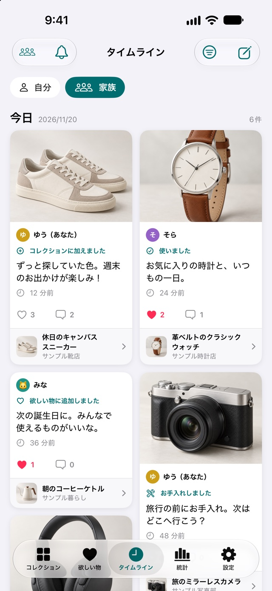
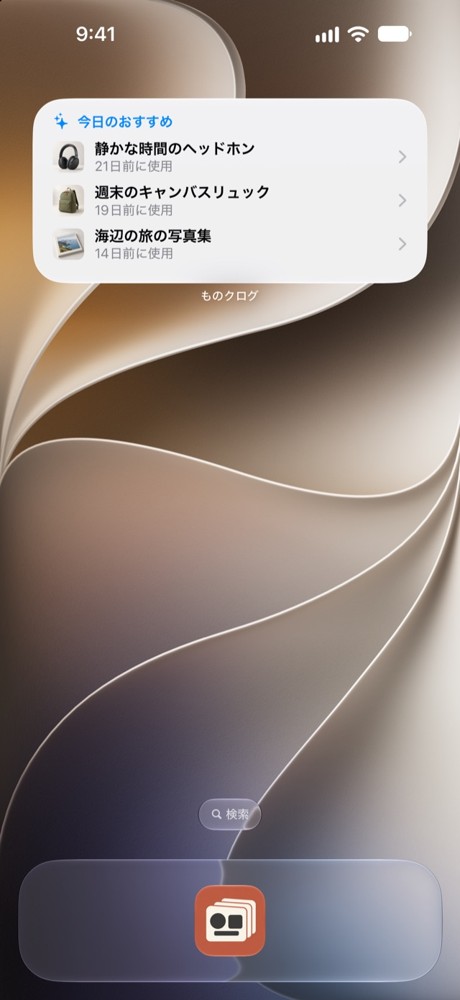
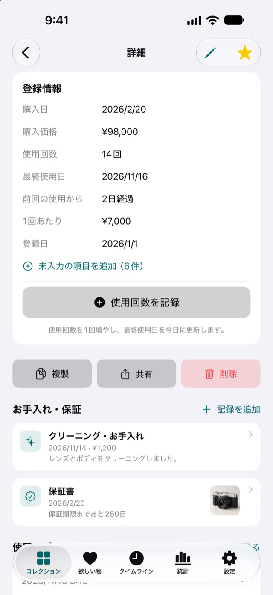
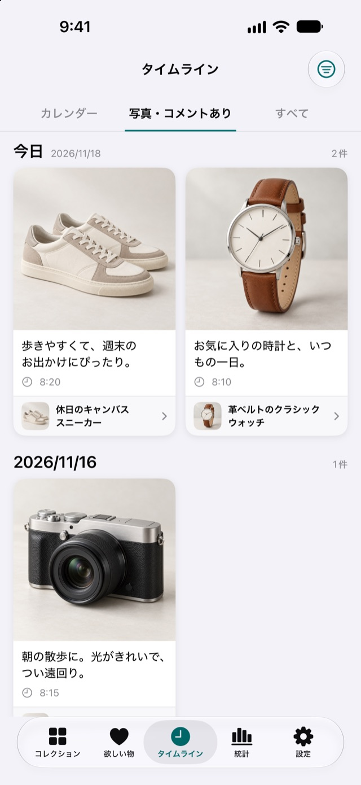
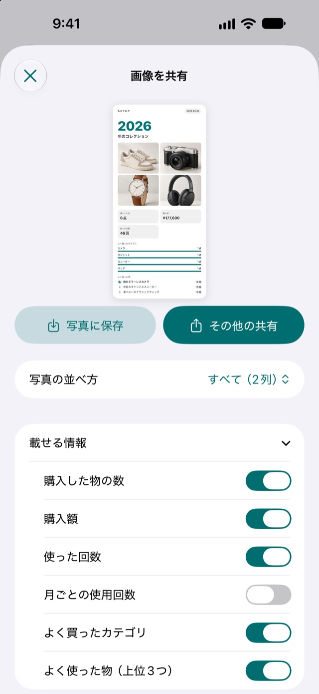
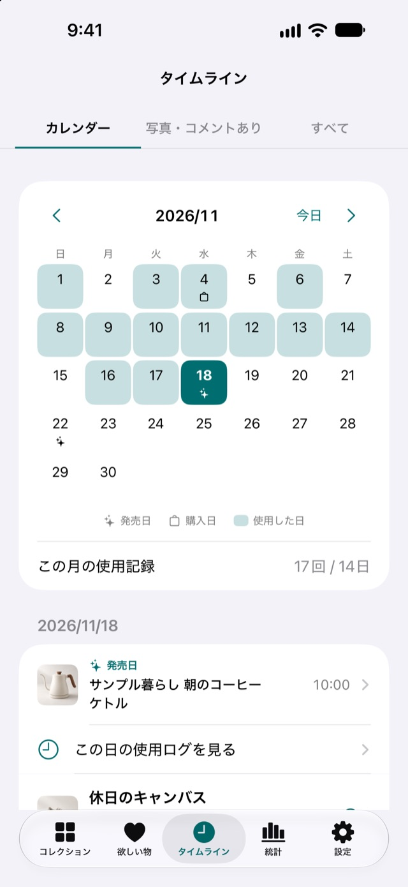
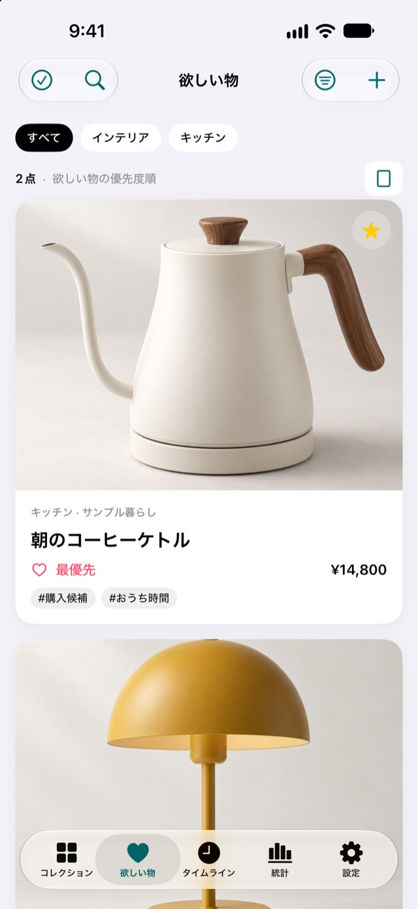
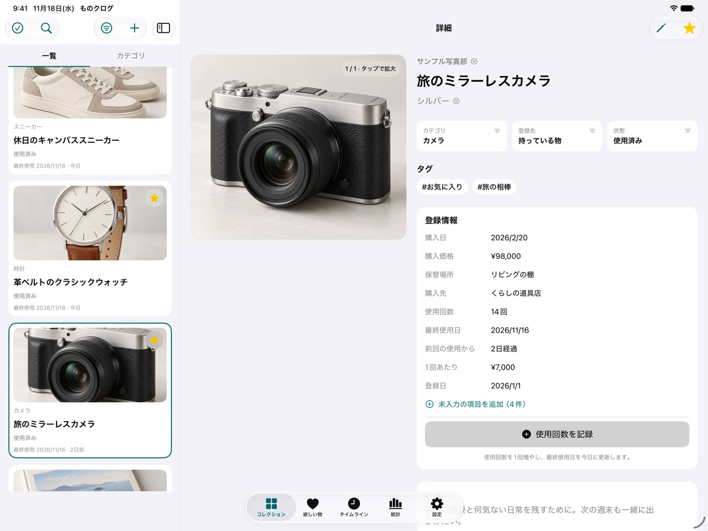
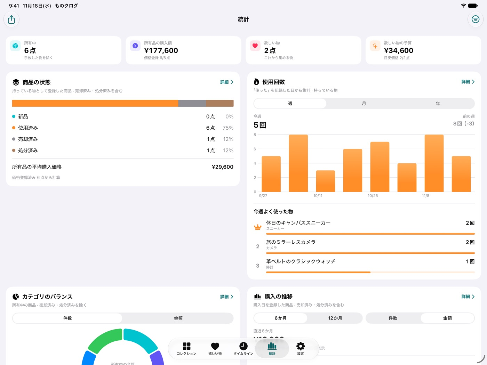

無料
好きなものを、
好きなものを、
いつも手元に。
スニーカー・時計・カメラ・本など、何でもカテゴリごとに登録。写真は1点につき6枚まで、カメラでもライブラリからでも追加できます。
- ブランドの中に「シリーズ」を登録して整理
- 長く使っていない物を「今日のおすすめ」でお知らせ
- 検索・絞り込み・並べ替えで、すぐ見つかる
持ち物・欲しい物・手放した物を、写真や使用記録と一緒に。よく使う物も、しまい込んだ物も、ひと目で分かるコレクション管理アプリです。
iPhone・iPad対応（iOS 17以降）・基本機能は無料・アカウント登録不要
登録して、使った日を記録するだけ。あとは、ものクログが振り返りやすい形にまとめます。
スニーカー・時計・カメラ・本など、何でもカテゴリごとに登録。写真は1点につき6枚まで、カメラでもライブラリからでも追加できます。

招待した人だけのグループで、コレクションに加えた物・欲しい物・使った記録をタイムラインで共有。いいねやコメントで、持ちもの話が広がります。
バージョン1.5から使えます。ベータ版のため、機能や画面が変わることがあります。
週・月・年ごとの使用回数をグラフで。前の期間と比べたり、その期間によく使った物のランキングを見たりできます。

しばらく使っていない物を、ホーム画面のウィジェットでお知らせ。タップすると、その持ち物の詳細がすぐに開きます。

クリーニング・電池交換・オーバーホール・修理・保証書を、日付・費用・メモ・写真と一緒に。持ち物ごとに履歴として残ります。

使った日に、写真とひとことを添えて。タイムラインで、持ち物と過ごした日々を振り返れます。

写真と情報を1枚の画像にまとめてSNSへ。プレビューを見ながら、載せる情報やデザインをその場で変えられます。
横にスクロールして、ほかの画面も見られます。


NEW 同じApple AccountのiPhoneとiPadの間で、持ち物・写真・使用記録・お手入れの記録がiCloudで自動的に同期されます（無料）。データはご自身のiCloudに保存されます。


優先度・目安価格・発売日を記録。手に入れたら「持っている物」へそのまま移せます。
30日・90日・180日以上使っていない物を、週に1回お知らせ。持ち物を見直すきっかけに。
カテゴリごとに、よく使った物・最近買った物・高い物などの順に並べて眺められます。
背景・カード・文字・アクセントの色を選んで、アプリ全体の見た目を変えられます（Pro）。
写真ごとファイルに書き出し・読み込み。ProではiCloud Driveへ自動でバックアップします。
インストールしてすぐに使えます。登録した内容が開発者に送られることはありません。
Proは月額ではなく、一度の購入でずっと使えます。価格はApp Storeでご確認ください。
まずは気軽に、持ち物を記録。
記録をもっと深く、もっと自由に。
必要ありません。インストールしてすぐに使えます。
お使いの端末の中と、iCloud同期がオンの場合はご自身のiCloudです。開発者が内容を見ることはありません。iCloud同期は「設定 → iCloud同期」でオフにできます。
新しい端末で同じApple Accountにサインインし、iCloud同期をオンにすると、データが引き継がれます。バックアップファイルを書き出して、新しい端末で読み込むこともできます。詳しくはサポートをご覧ください。
招待されて、リーダーに承認されたメンバーだけです。投稿は書いた人自身のiCloudに保存され、開発者が内容を見ることはありません。Apple Accountの名前やメールアドレスは、ほかのメンバーに伝わりません。グループはバージョン1.5からのベータ版です。詳しくはサポートをご覧ください。
いいえ、一度の購入で使える買い切りです。同じApple Accountの端末では「購入を復元」で使えます。